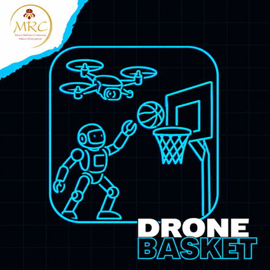
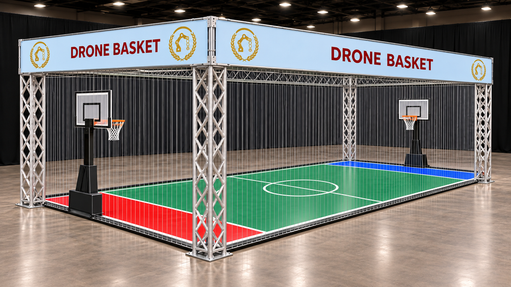
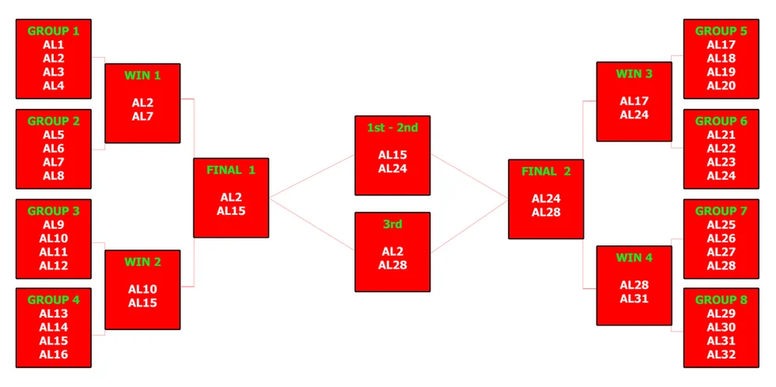
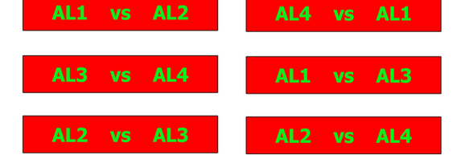

DRONE BASKET (無人機籃球)
希臘官方原文規則（English）中文賽事規則
規則內容
無人機籃球 (DRONE BASKET)
📢 2027 年新項目
年齡組別
兒童組 (KIDS)：10 至 12 歲 / 國小學生
青少年 / 高級組 (TEENS / SENIOR)：12 歲以上至 18 歲 / 國中與高中生
成人組 (ADULTS)：18 歲以上 / 大專院校學生及社會人士
⚠️ 本項目僅設有一個競賽級別：
本運動項目需要使用特定類型的無人機機器人，詳細規格於規則中說明。
🚨 各年齡組別分開進行比賽。
⚠️ 第零條規則 – 零容忍原則與常識
在所有運動項目中，均適用第零條規則，其內容如下：
➤「如果您不確定某件事是否被允許，那麼它很可能是不被允許的。」
所有規則皆基於常識、運動精神以及所有參與者的安全。
任何蓄意曲解、違反規則本意，或試圖利用灰色地帶獲取不公平優勢的行為，將不被容忍，並可能導致隊伍被取消比賽資格。
🎯 賽事目標
聯盟（3 支隊伍、每隊一顆無人機球）的目標，是讓無人機球穿過對手的籃框得分，同時阻止對手在自己的籃框得分。
👥 隊伍 – 教練
- 本賽事為團體賽，非個人賽。
- 每支隊伍可由二 (2) 至三 (3) 名成員組成。
- 每隊必須指定最多一 (1) 名機器人運動員技術員。僅技術員可進入等待區或比賽區域，其他隊員可在操控點後方觀看比賽。
- 隊伍可在每次上場前更換指定的技術員，讓所有成員都有機會積極參與，但此非強制性。
- 所有隊員必須年滿 10 歲（相當於國小四年級或以上）。
- 隊伍教練必須年滿 20 歲。
- 為確保賽事順暢進行，教練每報名 3 支隊伍，就必須配備 1 名助理。
- 每支隊伍僅限擁有一顆無人機球，比賽期間不得更換。
- 各隊之間不得共用同一顆無人機球。
- 若隊伍的無人機球遇到嚴重技術問題，須經主裁判許可才能更換。
🤝 聯盟
- 一個聯盟由 3 支隊伍組成，每支隊伍只能使用一顆無人機球。
- 每場比賽由兩個聯盟對戰。
- 組成聯盟的所有隊伍必須代表同一所學校或機構。一所學校或機構必須有 3 支隊伍、每隊各有自己的無人機球，才能組成聯盟參加本項目。
- 比賽期間，聯盟將被稱為「聯盟 1」、「聯盟 2」等。
- 比賽當天若有 1 支隊伍未出席，聯盟可以 2 支隊伍出賽。「得分手」角色仍為必要，另一顆無人機球擔任「組織者」或「籃框防守者」。
- 若同一聯盟有 2 支隊伍未出席，對手聯盟直接獲勝。
- 聯盟在比賽任何階段被取消資格，對手聯盟直接獲勝。
🛸 無人機球類別
比賽使用外面有球形保護殼的無人機。

🛸 無人機球規格
- 遙控器：無人機球必須使用遙控器操作。
- LED 燈光：每顆無人機球必須配備燈光，至少能發出紅色與藍色兩種顏色，讓各聯盟有自己的代表色，方便裁判在比賽中辨識。
- 尺寸與重量：無人機球的尺寸最大為 20cm x 20cm x 18cm（誤差 ±1cm），重量不得超過 160 公克。
- 規格確認：為確認符合上述規格，無人機球將進行秤重，且必須能順利放入檢查箱中。
- 檢查箱尺寸：20cm x 20cm x 18cm，公差為 ±1cm。無人機球必須能在不施加壓力的情況下放入檢查箱。
- ➤ 備用電池：隊伍必須準備至少一顆備用電池，以免延誤比賽。
🧪 技術檢查
- 初次技術檢查將於比賽當天，在主辦單位規定的地點和時間進行。
- 技術檢查包括依上述條件檢查無人機球及遙控器。若不符合規格，將不被允許參賽，並自動取消參賽資格。
- 若隊伍未在初次檢查時到場，將自動被取消比賽資格。
- 初次檢查完成後，無人機球將獲得專屬的 ID 編號。
- 每場比賽前，助理裁判也會進行二次技術檢查。
- 比賽過程中，若裁判判定無人機球違反或未達規定規格，裁判有權立即取消其參賽資格。
🏟️ 場地規範
- ➤ 賽場尺寸：賽場為長方形，尺寸為 4 公尺 x 6 公尺。
- 賽場圍欄：為安全起見，賽場四周以網子圍住。
- 籃框：兩個落地式籃框分別靠在賽場兩端的短邊牆。籃框的確切尺寸將於比賽當天公布。
- ➤ 賽場地面：地面標線類似籃球場。
- ➤ 籃下區：每個籃框前方有一塊 4 公尺 x 70 公分的長方形區域，標示為紅色或藍色。
🏆 賽事競賽
📋 一般資訊 - 規則
🏟️ 賽制
- 賽制依各年齡組別參賽的聯盟數量決定。
- 聯盟分為 16 組。
- 每個小組的聯盟數量，以及小組內聯盟之間的對戰場數，將依參加本項目的隊伍數量調整。
- 依參賽數量，小組賽之後進入 16 強、8 強或 4 強。
- 晉級的聯盟依本頁最後的賽制圖進入後續階段。
- 組委會保留依參賽聯盟總數調整賽制的權利。
🤝 聯盟角色分工
每個聯盟須為三顆無人機球各指定以下一種角色：
- 得分手 (Scorer)
- 組織者 (Playmaker)
- 防守者 (Defender)
每個聯盟必須在比賽開始前向裁判申報角色分配。
📝 角色職責
- ➤ 得分手：只有得分手無人機球可以得分。得分手完整穿過對手的籃框，才算得分。
- ➤ 防守者：籃框防守者負責保護己方聯盟的籃框。無人機球不得為了防守而進入自己的籃框，或停留在籃框內。第一次違規，裁判給予警告；同一顆無人機球再次違規，將被取消該場比賽資格，聯盟在沒有籃框防守者的情況下繼續比賽。
- ➤ 組織者：協助得分手製造得分機會。
🏀 投籃得分
只有得分手無人機球完整穿過對手的籃框，才算投進。
🏀 比賽計分
- 每次投進得 2 分。
- 每次罰球命中得 1 分。
📊 小組賽積分
- 勝場得 2 積分。
- 敗場得 1 積分。
- 棄權落敗得 0 積分。
🏟️ 小組賽晉級 16 強
每組積分最高的聯盟晉級 16 強。若兩個或以上聯盟積分相同，依序比較以下項目決定排名：
- 同分聯盟之間的對戰結果。
- 這些對戰中較高的得失分差。
- 這些對戰中較高的得分。
- 全部小組賽中較高的得失分差。
- 全部小組賽中較高的得分。
以上都相同時，以計時罰球決定哪個聯盟晉級 16 強。
🏟️ 16 強與淘汰賽階段的計分與晉級
- 16 強及之後的淘汰賽，比賽中得分較高的聯盟獲勝。
- 獲勝聯盟晉級下一階段，落敗聯盟淘汰。
- 正規時間結束時若平手，進行一次 2 分鐘延長賽。
- 延長賽後仍平手，以下列計時罰球程序決定勝負。
- 準決賽勝方進入決賽，敗方進行季軍賽。決賽決定第 1、2 名，季軍賽決定第 3、4 名。
🏟️ 計時罰球程序
- 每次罰球前，裁判將得分手無人機球放在指定的罰球線上，其他無人機球都必須留在地面，不得干擾。
- 裁判發出信號後，得分手起飛，有 10 秒時間盡可能多次投籃。
- 時限內每完整穿過對手籃框一次，得 1 個罰球分。
- 若得分手未起飛或違規，該次記 0 個罰球分。
- 雙方各罰 3 次，輪流進行，罰球總分較高的聯盟獲勝。
- 3 次後仍平手則進入驟死：雙方輪流各進行一次 10 秒罰球，直到一方在一次罰球中得分多於另一方為止。
🔄 技術員更換時間
同一小組的比賽之間，聯盟可以更換技術員。
⏱️ 比賽時間
- 比賽總時長為 4 分鐘。
- 不設中場休息，雙方在整整 4 分鐘內使用同一個籃框。
- 比賽期間時間連續計算，完全不停錶。
- 每場比賽前，無人機球都必須接受裁判的技術檢查。
⚠️🛠️ 比賽準備與限制
- 比賽開始時，所有無人機球依聯盟代表色，放在賽場地面的紅色或藍色區域內。
- 裁判吹哨開賽，所有無人機球必須在哨音後起飛。
- 聯盟投進時，裁判記錄分數，不停錶。
- 投進後，得分聯盟所有仍在場上的無人機球必須立即回到己方半場，才能再次投籃。違反此規則時，對手聯盟獲得一次罰球；裁判認定因此違規而產生的得分不予計算。
- 若無人機球纏在一起，裁判可要求它們降落，依裁判信號恢復比賽。
- 若無人機球故意試圖破壞對手的無人機球，裁判將出示紅牌。該無人機球被逐出比賽，聯盟以兩顆無人機球繼續；其技術員必須讓它降落並關閉電源，期間不停錶。
- 防守聯盟的無人機球不得故意停留在自己籃框前，或沿底線平行移動超過 3 秒。若裁判判定違規，該無人機球被逐出比賽，聯盟以兩顆無人機球繼續。
- 對裁判判決只能向主裁判提出申訴，主裁判的決定為最終決定。對主裁判的最終決定提出異議，可能導致隊伍或聯盟被取消資格。
🩹 無人機球受傷
➤ 發生以下情況時，裁判將判定無人機球受傷：
- 任何零件脫落。
- 因與遙控器失去連線而靜止不動。
- 受傷的無人機球必須留在比賽場地的地面上，直到 4 分鐘比賽結束。隊伍可在賽後修理，以便參加下一場比賽。
- 若聯盟所有無人機球都受傷且無法繼續比賽，裁判將給予該聯盟最多 10 分鐘回到比賽。這段期間，裁判盡可能先進行下一場排定的比賽；聯盟準備好後，裁判再恢復中斷的比賽。若聯盟未能在 10 分鐘內準備好，比賽直接結束，以中斷當時的比分為最終比分。
📅 賽制圖


小組內聯盟對戰範例
🟥 隊伍取消資格
在下列情況下，隊伍將被取消該項目的參賽資格並必須退出比賽。該隊的成績將不予計算，亦不列入賽事成績：
1. 隊伍的無人機球不符合競賽規則規定的要求，且隊伍拒絕配合修正。
2. 任何無人機球技術員行為不當、不尊重他人、謾罵、挑釁，或以言語及其他方式攻擊隊友或裁判。
3. 隊伍的教練（即使只有一位）行為不當或不雅、謾罵、挑釁，或以言語及其他方式攻擊其他隊伍、隊友或裁判。
4. 上述規則中所列出的違規情況。
✅ 允許 / ❌ 禁止事項
✅ 允許事項：
- 比賽之間經常更換電池，讓無人機球隨時可以上場。
❌ 禁止事項：
- 對無人機球進行任何改裝。
- 使用與無人機球原廠配備、本項目建議不同的馬達。
- 改裝遙控器。
- 上述規則中列出的禁止事項。
🏆 獲獎者
依據成績，每個年齡組別將宣布獲得以下名次的聯盟：
🥇 冠軍 (第 1 名)
🥈 亞軍 (第 2 名)
🥉 季軍 (第 3 名)